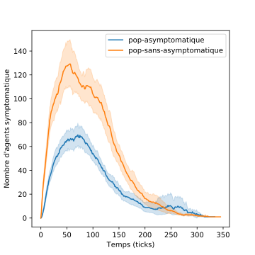
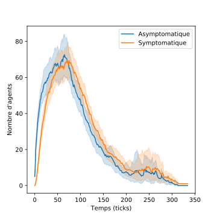
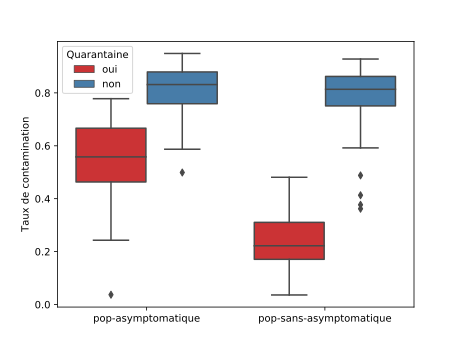
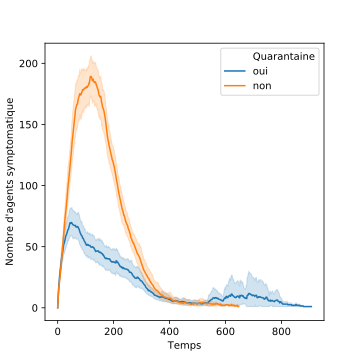
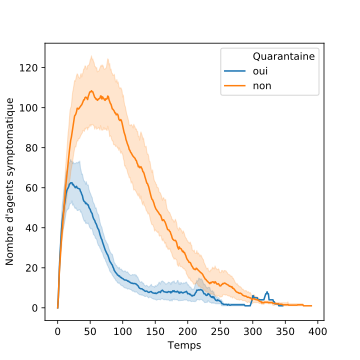
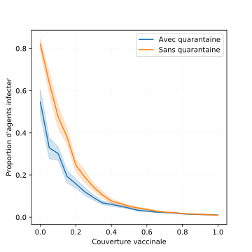
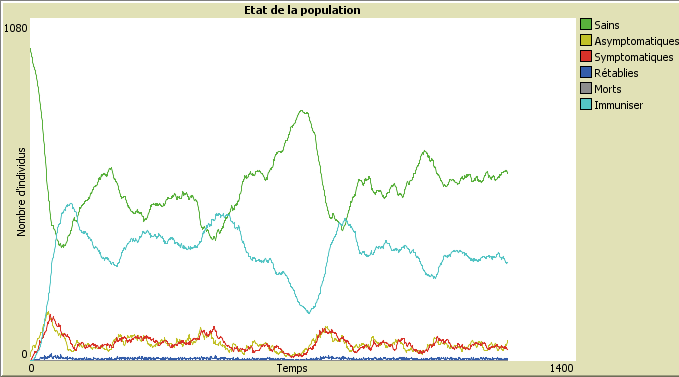

Modèle SASRI
Cette étude vise à examiner l'impact de politique publique pour contrôler une épidémie à travers deux types d'agent infectieux.Description du modèle SASRI
Le modèle SASRI intègre deux sous modèles : un modèle de mobilité et un modèle à compartiment d'épidémiologiques. Le modèle de mobilité décrire un mouvement brownien des agents dans un espace à deux dimensions. Un agent en quarantaine est immobile. Le modèle à compartiment d'épidémiologiques (cf. ci-dessous) définie les probabilités de transition entre les différents état de l'agent. Un agent peut prendre les états suivant : sain, asymptomatique, symptomatique, rétablie, mort, immuniser. Lors de la transmission et du risque de mortalité, ce modèle ne tient pas compte des spécificités liées à la tranche d'âge, au sexe et de l'état de santé.

Politique publique : l'efficacité de la quarantaine
Question : La quarantaine de la population symptomatique est-elle une mesure efficace pour contrôler une épidémie ? Nous faisions hypothèse que seules les personnes symptomatiques peuvent être identifié pour être mise en quarantaine. Cela correspondant au stade 2 du plan de réaction français face à la pandémie de coronavirus.
Nous analysons deux hypothèses : un virus produisant une population asymptomatique (scénario pop-asymptomatique) et sans une population asymptomatique (scénario pop-sans-asymptomatique).
Le tableau ci-dessous donne l'ensemble des paramètres du modèle pour les deux scénarios de virus différents : pop-asymptomatique, pop-sans-asymptomatique. Pour les deux scénarios, la période de l'infection d'un agent dure en moyenne 20 ticks. C'est-à-dire le nombre de ticks d'un agent en état asymptomatique plus le nombre de ticks d'un agent en état symptomatique correspond en moyenne à une période de 20 ticks.
| Paramètres\Sénarios | pop-asymptomatique | pop-sans-asymptomatique |
|---|---|---|
| n (taille population) | 1000 | |
| Densité | 0.03906 agent/patch | |
| Nombre de patients zéros | 5 | |
| rayon | 4 | |
| p-asymptomatiques | 1 | |
| p-symptomatiques | 0.1 | 1 |
| p-retablies | 0.1 | 0.05 |
| p-mort | NaN | |
| p-immuniser | NaN | |
| p-sains | NaN | |
| p-vacciner | NaN | |
Comparison de l'évolution de l'épidémie des deux sénarios
|  |  |
Impact de la quarantaine de la population symptomatique
La figure ci-dessous montre le taux de contamination en fonction de la quarantaine de deux scénarios : une infection avec une population asymptomatique et une infection sans une population asymptomatique. 100 expériences est calculer. La mise en place d'une quarantaine des personnes identifiée infectée à un impact significatif sur la réduction du taux de contamination total. Les infection avec une période asymptomatique faible un ou deux ticks réduit le temps taux de contamination. Dans ce cas de figure, le stade 2 du plan de préventions apporte une solution efficace. Dans le cas, d'une période asymptomatique plus longue, l'efficacité du stade 2 se trouve de facto limite puisque le virus continue de circuler.
Évolution de l'épidémie en fonction de la quarantaine
|  |  |
L'immunité de groupe
Couverture vaccinale
Dans cette étude (cf. figure x), la couverture vaccinale est effective avant le déclenchement de l'épidémie. Nous évaluions de degrés de couverture en fonction de la proportion d'agents infecter durant l'épidémie. L'immunité est considérée comme acquise définitivement, c'est-à-dire que la probabilité de devenir sains est égale à zéro.
Epidémie saisonnière
